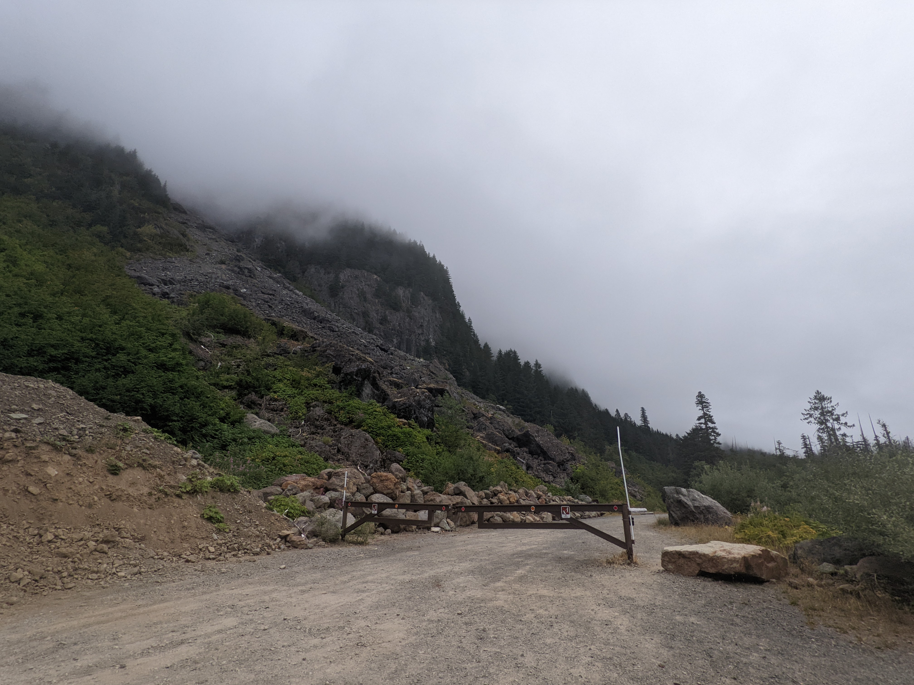

Gate and rock slide
On Westside Road, there is a gate to keep cars out.
Behind the gate is a rock slide. Erosion from rain and wind made part of the hill weak. Some of the rocks that fell on the road are bigger than cars!
Visited: September 3, 2022 at 7:15 AM
Location: Westside Road